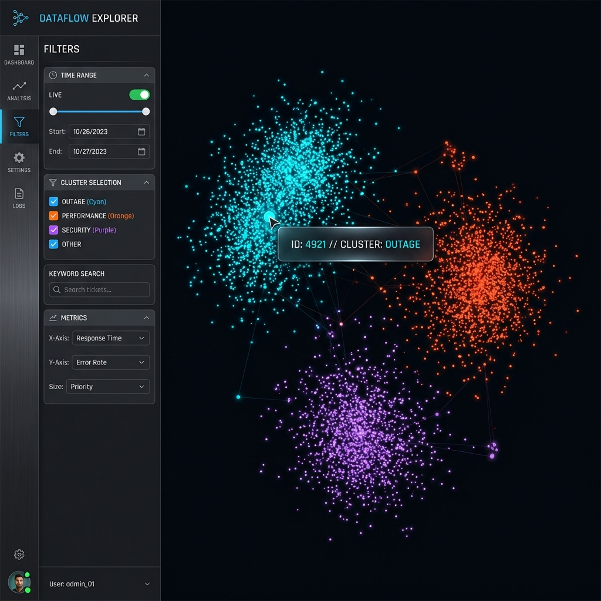

WORK
TERM
REPORT
01 // ABSTRACT
Government operations are often perceived as slow and manual. My objective was to shatter that perception.
During the Winter 2025 term, I served as an Operations Control Analyst for the Ontario Public Service (OPS), specifically within the Ministry of Public and Business Service Delivery and Procurement. Based at the data center in Guelph, I analyzed systems to discover bottlenecks and developed internal tooling to speed up operations.
The mission was clear: Eliminate toil, enhance reliability, and significantly reduce downtime.
*Confidentiality Note: All visual representations of internal tools and data on this site are
artistic interpretations created due to confidentiality.
*Compatibility Note: This site uses features that may be blocked in browsers such as Brave. Use
Chrome or Edge.
THE SCALE
Supporting critical government services monitoring and incident response for millions of citizens.
THE TECH
A hybrid of legacy stability and cutting-edge reliability engineering.
THE
WORK
→
INTELLIGENT AUTOMATION
I moved beyond simple scripting to build intelligent systems. The flagship project was a modern Internal Web Application leveraging AI embeddings and clustering to categorize and route incident tickets.
This replaced legacy intuition-based workflows with data-driven precision, directly targeting the team's biggest operational bottleneck.
THE ARSENAL
- PYTHON CORE // AUTOMATION BACKEND
- PYTORCH / SKLEARN // ML CLUSTERING
- PANDAS / NUMPY // DATA PROCESSING
- JS / CSS / POWER BI // VISUALIZATION
OPERATIONAL IMPACT
The mandate was to eliminate toil. By introducing Power BI & Fabric for enhanced observability and rewriting legacy automations, I reduced manual intervention significantly.
My work verified that system alerts were actionable signals, not just noise, ensuring higher service availability and faster recovery times.
"Give an overview of your job or project. Highlight the most interesting or unique aspects of your job. What skills did you need for the job? Did you learn them in class or on the job?"
FREEDOM & PHILOSOPHY
The most interesting part was certainly the freedom given to the coop students. We got to explore topics we found interesting (C++) for example. And we got to build real, useful tools.
They had the philosophy that younger, newer eyes can see solutions that older people in the industry might miss.
THE MANDATE
My job was automating the grunt work, upkeeping the scripts to ensure the automations continue working as intended, and self-learning to develop better things in the future.
SKILL ACQUISITION
To be proficient on the job, I had to have a good understanding of the Microsoft ecosystem: Windows, Excel, Word, Power BI, Fabric and more.
I learnt Power BI on the job, but have tinkered with all before on my freetime, allowing me to further refine my knowledge on the job.
"IF YOUR AUDIENCE WERE ASKED TO DESCRIBE YOUR SITE, WHAT WOULD YOU WANT THEM TO SAY?"
I want them to see this not as a report, but as a manifesto of active contribution. I didn't just inhabit a role; I expanded it.
If they remember one thing: I built tools that work. I identified friction and removed it.
A pivotal moment was competing in the 2025 OPS Hackathon. It was more than a competition; it was a massive networking opportunity that bridged the gap between student innovation and government scale, proving that rapid prototyping has a place in the public sector.
This website describes a co-op term defined by competence and curiosity. From self-teaching C++ to mastering the Microsoft automation stack, every day was used to sharpen my toolkit.
GOALS
01. INTERNAL TOOLING
02. FULL STACK ARSENAL
03. C++ PROFICIENCY
04. FUTURE ALIGNMENT
I DID NOT JUST WATCH THE SYSTEMS RUN.
I MADE THEM RUN BETTER.
ACKNOWLEDGEMENTS
I would like to thank my managers, George Olunloyo and Manjeet Singh, and the entire team for providing an environment where I could experiment, contribute, and learn.
STUDENT
 ASHTON LONG
ASHTON LONG